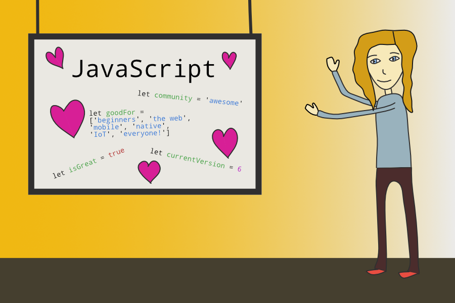
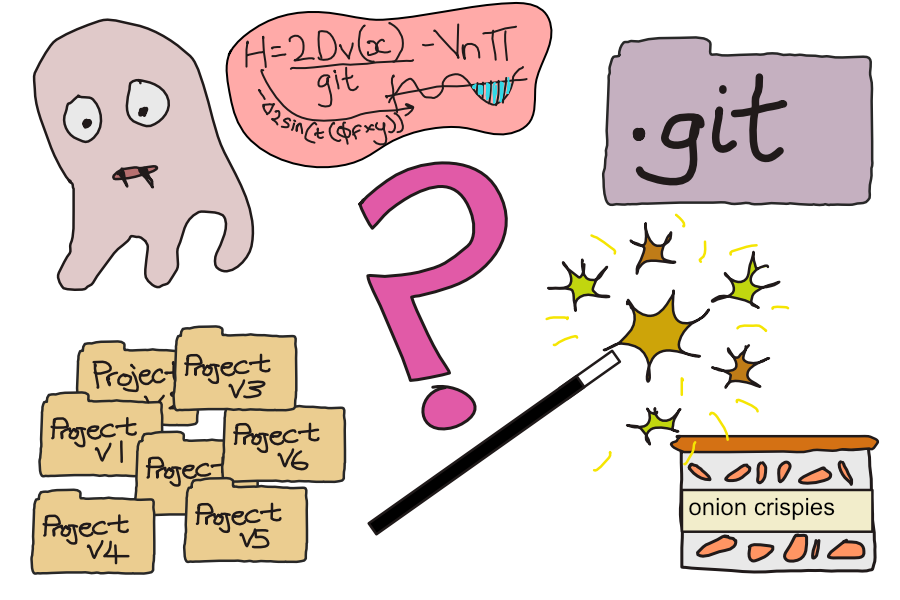

hello

Software developer, language nerd, reader, learner, runner, plant mother. Originally an arts graduate and librarian, I've been writing about my journey into tech (and other things) for a couple of years.
blog
- Looking back at November(1st Dec, 2018)
- Running user-submitted code in a Docker sandbox(17th Nov, 2018)
- Looking back at October(1st Nov, 2018)
- Looking back at September(9th Oct, 2018)
- Walking the Camino de Santiago(30th Sep, 2018)
- Looking back at August(28th Aug, 2018)
- Interviewing for a Software Engineer role(1st Mar, 2018)
- Learning my second programming language(18th Jan, 2018)
- 8 things I learned during Advent of Code 2016(26th Jan, 2017)
- Why knitting is a perfect complement to coding(19th Nov, 2016)
- Preparing for Northcoders(3rd Apr, 2016)
- Joining Northcoders - The Interview Process(17th Mar, 2016)
talks
Introduction to JavaScript
A workshop given at CodeFirst:Girls Northern Conference, March 2018. An introduction to the JavaScript programming language and its history, for complete beginners
What's in the Git Directory?
A talk given at Northcoders Lightning Talks, 2017
external blogs/publications
- What to expect in your first week as a software developer (FreeCodeCamp Publication, Medium)
- Zipping and unzipping files with NodeJS (Medium)
- Make a web scraper with AWS Lambda and the Serverless framework (Northcoders Publication, Medium)
- Reimplementing Express (Part 1) (Medium)
- Reimplementing Express (Part 2) (Medium)
- Understanding bugs and errors in JavaScript (Northcoders Publication, Medium)
- An Algorithm for Solving Coding Katas (Northcoders Publication, Medium)
- Creating a Project Generator with NodeJS (Northcoders Publication, Medium)
- 5 Great Books for Coding Beginners (Northcoders Publication, Medium)
teaching/mentoring/speaking
I have always been passionate about education - before tech I worked in school/college libraries, and as an English tutor. Now I love having the opportunity to show people how awesome coding is, especially people who belong to underrepresented groups in the tech industry.

At Northcoders (the UK's top bootcamp for graduate outcomes 🤓) I taught full-stack JavaScript to complete beginners through to job-ready level. I developed and delivered the part-time curriculum which ran for 9 months, and also ran numerous taster sessions, introductory courses and study groups.
I ran several Lightning Talks events, gave lightning talks myself including What's in the .git directory? and organised events such as the Teaching Tech Knowledge Exchange for National Coding Week.


I regularly mentor at Codebar Manchester, a non-profit group designed to help underrepresented people learn to code in a friendly and supportive environment. I have also given technical and personal talks to students at organisations such as Tech Returners and CodeFirst:Girls.
I gave an Introduction to JavaScript workshop at the CodeFirst:Girls 2018 Northern Conference. Thank you for having me! More like this please 🙏 I am also currently teaching and mentoring on the Ruby CFG General Course in Manchester


I mentor at Rails Girls and once gave a lightning talk on The Weird World of Programming Languages. (I also used to have pretty cool hair)
I am always interested in opportunities to give short talks or presentations, especially regarding my journey into tech, learning/training options and opportunities, and/or technical workshops (HTML, CSS, JavaScript, Ruby, Git etc). Drop me an email 📧